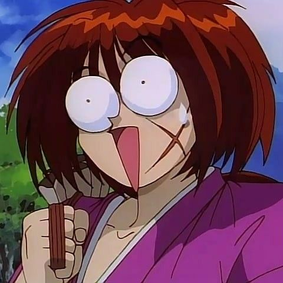

Meu nome é Gabriel, tenho 23 anos, sou formado em Análise e Desenvolvimento de Sistemas, curioso por tecnologia, programação e tudo que envolve o mundo digital. Já estudei linguagens como Kotlin e C#, mas sigo na missão de me encontrar de verdade na área.
Atualmente trabalho como operador de monitoramento de CFTV, enquanto exploro caminhos, aprendo e descubro onde realmente quero estar.
